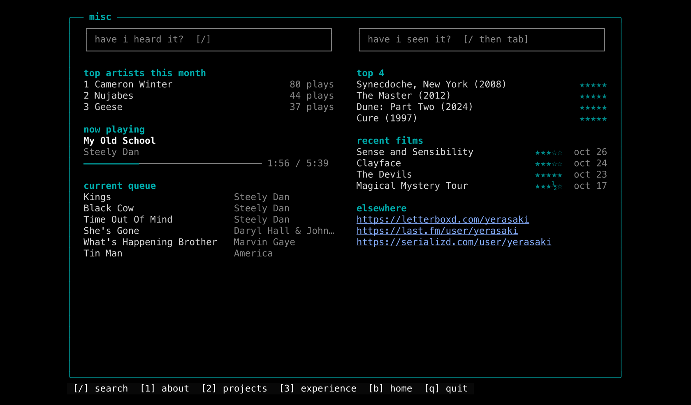
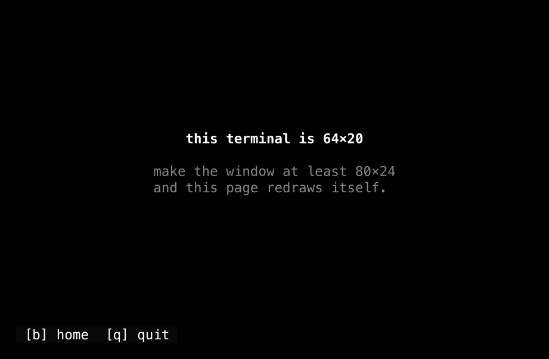

DIY
ssh portfolio.vedsite.com
paste into your terminal and type yes to confirm the connection. trust me, i don't want your data
overview
This is my website, but accessible over SSH. When you connect to port 22, you get vedsite.com in the terminal: the same four sections, the same photos and projects, and the same live music and film data. Each section below is one page of it, recorded from a real session. You can press 1 through 4 on your keyboard to jump between them, or just sit by and watch the squares bounce around (don't sit idle too long, I have a timeout set for 10 minutes).
home
I tried to be consistent with the DVD-player-esque animation style of my homepage, with the squares bouncing off the edge. Each square maps to a different section of my portfolio and morphs into a different character every time it hits a wall.
about
My bio and links, next to four photos from my gallery turned into colour ASCII art in the style of
terminalcam: every cell gets a character from a 70-step brightness ramp and the colour of the pixel
under it. ←/→ flips between them.
projects
Every project on this site is in a list you move through with the arrow keys, with a preview of the
highlighted one underneath. Enter opens a short write-up with links to the full page, and
b goes back to the list.
experience
My work, leadership, education, and the languages and tools I use. If your window is too short to fit it all, it scrolls with the arrow keys and shows a scrollbar.
misc
The same data as my misc page: what I'm playing on Spotify (with a progress bar that ticks between updates), my queue or recently played, my top artists this month, and my top 4 and recent films.

/ and type a song or artist to search my
Last.fm history. Enter on a result shows how many times I've played it and when I first and last
did.
tab switches the box to my Letterboxd diary, with
my rating, how many times I've watched it and a link to the entry. esc closes the
search.
getting around
1-4 to jump between
pages, b or esc to go back, and q to quit. Every page
lists the keys that work on it in a footer, and links open in your browser in most terminals.

construction
The app is written in Go using the Charm stack which is a set of GitHub libraries specifically built
for terminal UIs over SSH.
Wish handles the SSH server: it listens on port 22 and bootstraps a
fresh terminal UI for each incoming connection.
Bubble Tea is the TUI framework that drives the render loop:
an Init → Update → View cycle running at 50ms ticks for smooth animation.
Lip Gloss handles all the styling including colors, bold text, positioning in the
terminal.
The animation loop works like a simple physics engine: each square has an (x, y) position and a velocity vector (vx, vy). With every tick, positions update and bounce off of terminal edges. On collision, the square's character morphs to the next one in the cycle.
Every page draws into a fixed grid of cells, which is then written out in runs of one colour, so layouts line up exactly at any size from 80×24 up. Doing the same for the home screen cut what it sends over the wire by about 10× without changing a single character on screen.
The misc page doesn't fetch anything per visitor. One fetcher on the server keeps the latest data
from api.vedsite.com and only runs while someone is on that page, so a hundred
visitors cost the API the same as one. If the API goes down, the last data stays up, marked stale.
Searches wait 150 ms after you stop typing and ignore answers to older queries. The photos are
prepared offline with ffmpeg (cropped, sharpened, contrast-stretched), built into the binary, and
scaled to your terminal when you open the page. Each size is built once and shared by everyone.
architecture
The Go binary runs natively on an Oracle Cloud free-tier VM, listening on port 22, so
ssh portfolio.vedsite.com lands straight in the Wish server. Cloudflare handles DNS
as an A record on DNS-only mode pointing at the VM, since SSH cannot be proxied on the free tier.
It used to run on my Pi behind a relay on the VM, but then every visitor looked like they were
connecting from the relay, so I moved the binary itself onto the VM.
Source? The code is on my GitHub.
The main logic is still a single main.go file: the model, every page, the shared
cache and the SSH server setup. The photo art sits next to it in art/.